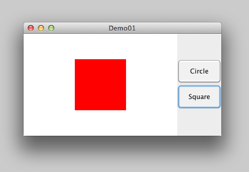
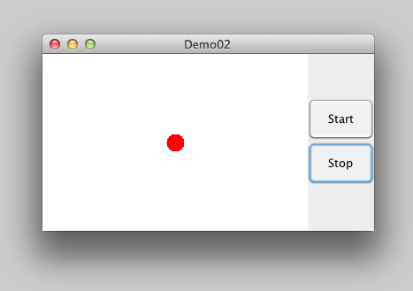

kontakt@lithehack.se — lithehack.se/koma
Tisdagar och torsdagar, 17-19
Skansholm Java direkt upplaga 6 eller 7 avsnitt 7.2, 12.4-7, 14.1
java.awt.Graphics
Standardklassen java.awt.Graphics kan användas för att rita enkla figurer med hjälp av ett antal olika metoder.
Linjer, ellipser, rektanglar, bilder, text, mm.
Används till exempel genom att skapa en subklass till JPanel.
public class MyPanel extends JPanel
{
// instansvariabler...
// konstruktorer...
// instansmetoder...
// rita figuren, måste finnas
public void paintComponent(Graphics g)
{
super.paintComponent(g);
g.drawAAA(...);
g.fillAAA(...);
}
// flera metoder möjliga...
}
paintComponent är protected, anropas endast indirekt via via repaint().
Tillämpat i exemplet ShapeDrawer för att rita cirklar och kvadrater.

Mer avancerad grafik i java.awt.Graphics2d.
Standardklassen javax.swing.Timer kan användas för att generera ActionEvents på tidsbasis.
Timer(m, l); – skapa en timer som genererar en händelse var m:te ms och registrera l som lyssnare.start(); – starta timernstop(); – stoppa timern
// Ny timer, anropar actionPerformed() i samma klass
private Timer timer = new Timer(100, this);
// ... massa grejer!
public void actionPerformed(ActionEvent e)
{
if (e.getSource() == btnStart)
{
timer.start();
}
else if (e.getSource() == timer)
{
size += 10;
size %= 160;
drawer.setShape(shape, size, color);
}
}
JFrame består av fönster med kanter och titelrad. Detta fönster kan ha en menyrad!
En förenklad klasshiearki för menyer:
javax.swing.JComponent
javax.swing.JMenuBarjavax.swing.JMenuItem
javax.swing.JMenujavax.swing.JCheckBoxMenuItemjavax.swing.JRadioButtonMenuItemjavax.swing.JPopupMenu
Motsvarar klasserna JButton, JCheckBox och JRadioButton.